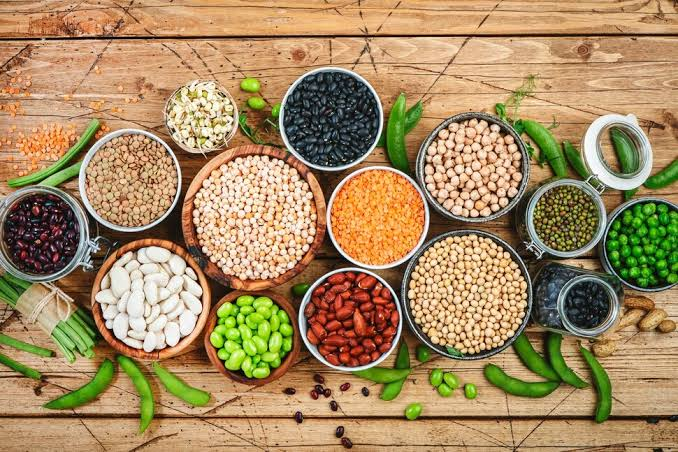
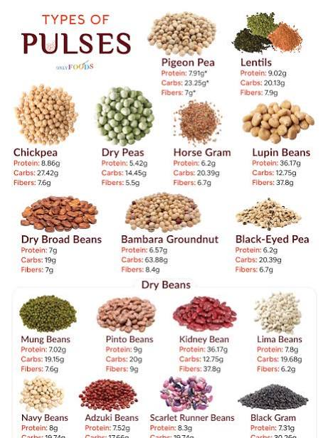
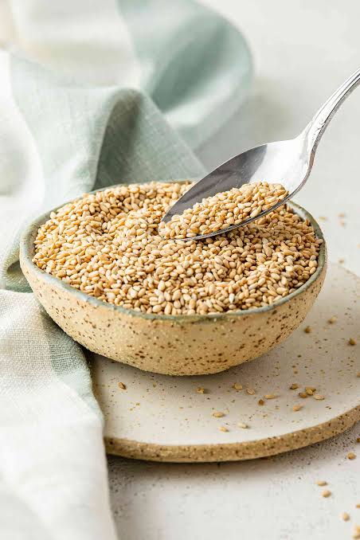

About the trading floor
Origin AgriTrade is a catalogue and bid desk for Ethiopian export commodities. The floor lists coffee, pulses, beans, and seeds that have a warehouse grade, a bag count, and a named origin. Buyers send bids from the auctions page or ask a question on the contact page.
What is checked before a lot is listed
- Origin name matches the growing area on the delivery note.
- Grade, screen, and process (washed, natural, or honey) are written on the lot card.
- Bag count and net metric tons are recorded for the parcel.
- Moisture and defect notes are attached for pulses, beans, and oilseeds.
Coffee regions we list

Ethiopia’s commercial coffee is Coffea arabica. The region is the commercial type.
- Yirgacheffe: floral, citrus, tea-like, light-to-medium body, bright acidity
- Sidama: fruity, sweet, balanced, with floral, berry, or chocolate notes
- Guji: sweet, floral, and fruity, often berry-forward when natural processed
- Harrar: bold, heavy body, dry-processed, winey berry, spice, or mocha
- Limu: mild, smooth, balanced, sweet, spicy, or floral
- Jimma: hearty, full body, often fruity or earthy
- Lekempti and Gimbi: full body, sharp acidity, fruity or wine-like
- Teppi and Bebeka: lighter acidity, forest and spice character
- Kaffa and Illubabor: historic southwest origins tied to forest coffee
Cup notes for each region are expanded in the blog.
Processing styles
| Process | What the buyer should expect |
|---|---|
| Washed | Cleaner and brighter, often floral or citrus |
| Natural / dry-processed | Sweeter, heavier body, berry and fruit forward |
| Honey | Occasional lots; sweetness between washed and natural |
Pulses, beans, and seeds
Pulses

Types of pulses

- Chickpea
- Lentils
- Dry peas and pigeon pea
- Mung beans
- Pinto, kidney, navy, and lupin beans
- Dry broad beans
- Black-eyed pea and black gram
Pulses and beans grown in Ethiopia
- Faba bean (broad bean): largest pulse by volume, mostly cooler highlands
- Haricot / common bean: white pea, red or speckled kidney, pinto, cream, and black beans
- Chickpea (shimbra): Desi and Kabuli, used for shiro, kik, and kolo
- Field pea: cool-season highland pulse for food and feed
- Lentil: highland crop for kik wot, soups, and azifa
- Grass pea (guaya): hardy pulse in highland and food-security areas
- Also listed when offered: mung bean, soybean, cowpea, pigeon pea, and lupin
Oilseeds and spice seeds
- Sesame: Humera and Wollega types
- Noug (Niger seed)
- Linseed (flaxseed)
- Groundnut and safflower
- Ethiopian mustard (gomenzer)
- Fenugreek and black cumin (nigella)

Who can bid
Exporters, roasters, and commodity buyers with a trade licence can submit a bid. Upload the licence with the form. The desk replies by email.